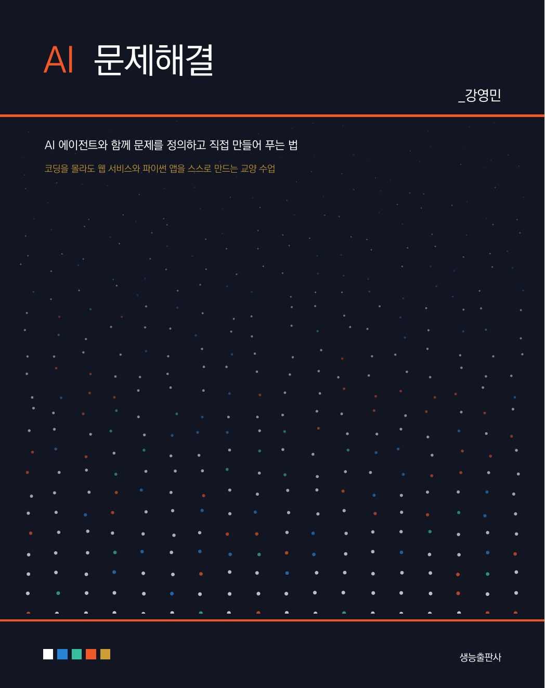

머릿말
이 책 『AI 문제해결』은 컴퓨터를 전공하지 않은 사람이 자기 전공의 문제를 스스로 풀어내도록 돕기 위해 준비하였습니다. 경영학과 학생이 동아리 회비 정산을 자동으로 처리하고, 간호학과 학생이 실습 일정을 정리하는 도구를 만들고, 국문학과 학생이 자기 글의 문장 길이 분포를 살펴보는 페이지를 만드는 일이 이제 가능해졌기 때문입니다. 이 책은 그 일을 프로그래머에게 부탁하는 대신 직접 해내는 길을 안내합니다.
가능해진 이유는 분명합니다. 사람의 말을 알아듣고, 스스로 계획을 세우고, 코드를 쓰고 고쳐 가며 일을 끝까지 해내는 AI 에이전트가 등장했기 때문입니다. 예전에는 무엇을 만들려면 문법부터 배워야 했습니다. 지금은 무엇을, 왜, 누구를 위해 만들 것인지를 정확하게 말할 수 있으면 됩니다. 그래서 이 수업의 진짜 어려움은 코드가 아니라 문제를 제대로 정의하는 일에 있습니다.
이 책은 그래서 절반을 문제에 씁니다. 앞의 일곱 장은 문제를 찾아내고, 누구의 문제인지 밝히고, 쪼개어 구조를 보고, 여러 해법 가운데 만들 수 있는 크기의 것을 고르는 법을 다룹니다. 뒤의 다섯 장은 그렇게 정한 것을 실제로 만듭니다. 웹 페이지 한 장으로 시작해 사람들이 쓸 수 있는 곳에 올리고, 반복되는 일을 파이썬 앱으로 없애고, 오류를 만나 고쳐 나갑니다. 마지막 장은 자기 주제로 처음부터 끝까지 한 편을 완성합니다.
실습에 쓰는 도구는 무료로 쓸 수 있는 것을 우선하여 골랐습니다. 이 책의 모든 과제는 돈을 내지 않고 끝까지 완주할 수 있습니다. 다만 무료 한도 안에서 일하려면 요령이 필요하고, 유료로 넘어가면 무엇이 어떻게 좋아지는지도 정직하게 밝혀 두었습니다.
미리 말씀드릴 것이 둘 있습니다. 첫째, 이 책에 나오는 서비스의 이름과 요금, 화면은 책이 인쇄된 뒤에도 계속 바뀝니다. 그래서 이 책은 특정 도구의 버튼 위치를 외우게 하는 대신, 어떤 도구를 만나든 통하는 원리와 판단 기준을 익히도록 썼습니다. 둘째, 이 책은 여러분을 프로그래머로 만들지 않습니다. 대신 에이전트가 만들어 준 것을 읽고, 의심하고, 고쳐 달라고 정확히 말할 수 있는 사람으로 만드는 것을 목표로 합니다. 만들어진 것이 옳은지 판단하는 책임은 끝까지 사람에게 남기 때문입니다.
끝으로, 이 책이 나오기까지 도움을 주신 모든 분께 깊이 감사드립니다.
2026 여름, 부산에서 강영민
이 책의 구성
전체 구성
이 책은 13개의 장과 4개의 부록으로 이루어져 있으며, 큰 흐름은 다음과 같습니다.
- I부. 문제와 AI (1–3장) 코드를 몰라도 만들 수 있게 된 배경을 살피고, 인공지능이 답을 만들어 내는 방식과 그 한계를 익힌 뒤, 스스로 계획하고 도구를 쓰는 에이전트가 무엇인지 이해합니다.
- II부. 문제 정의와 해법 설계 (4–7장) 불편을 문제로 바꾸어 진술하고, 문제를 쪼개어 구조를 보고, 여러 해법 가운데 만들 수 있는 크기의 것을 고릅니다. 그 결정을 인공지능에게 정확히 전달하는 법까지 다룹니다.
- III부. 만들어 해결하기 (8–12장) 작업 환경을 갖추고 웹 서비스 한 편을 만들어 공개하며, 반복 업무를 파이썬 앱으로 없애고, 오류를 고치고 결과를 검증합니다.
- IV부. 프로젝트 (13장) 자기 주제를 정해 기획부터 제작·발표·포트폴리오 공개까지 한 편의 작업을 끝냅니다.
- 부록 무료 도구 총정리(A), 문제 해결 프롬프트 사전(B), 자주 만나는 오류(C), 배포와 공유 안내(D)를 실어 작업 중에 찾아볼 수 있게 하였습니다.
각 장의 구성
모든 장은 다음과 같은 일관된 흐름으로 구성되어 있습니다.
- 챕터 도입부 그 장을 마치면 할 수 있게 될 일을 정리한 이 장을 마치면 박스로 시작합니다.
- 본문 개념 설명과 프롬프트 예제, 실제 결과를 통해 단계적으로 학습합니다. 다루는 문제 사례는 문제 카드로, 새 도구는 도구 카드로 소개하며 무료·부분 무료·유료 배지를 함께 표시합니다.
- 이 장의 실습 직접 손을 움직여 결과물을 만드는 과제를 모아 제시합니다. 주차별 과제와 대응됩니다.
- 요약 그 장의 핵심을 항목별로 정리하여 복습에 활용할 수 있습니다.
- 연습문제 개념을 점검하는 문제와, 자기 문제에 적용해 보는 문제를 함께 제공합니다.
이 책을 읽는 방법
1장부터 7장까지는 만들지 않고 생각하는 구간입니다. 빨리 만들고 싶은 마음에 이 구간을 건너뛰면, 8장 이후에 무엇을 만들지 몰라서 멈추게 됩니다. 반대로 7장까지만 읽고 끝내면 아무것도 남지 않습니다. 두 구간은 한 짝입니다.
각 장의 실습에는 자기 전공의 문제를 가져오시기 바랍니다. 이 책이 드는 예시는 예시일 뿐이고, 끝까지 붙들고 갈 문제는 여러분이 직접 겪고 있는 것이어야 합니다.
15주 학습 계획
이 책은 주 2시간, 한 학기(15주) 교양 강의에 맞추어 설계하였습니다. 8주차와 15주차는 프로젝트 발표에 배정합니다.
| 주 | 학습 내용 | 과제·활동 |
|---|---|---|
| 1 | 1장 문제를 푸는 방식이 달라졌다 | 도구 계정 만들기, 첫 결과물 |
| 2 | 2장 AI는 어떻게 답을 만드는가 | 같은 질문 다르게 물어보기 |
| 3 | 3장 에이전트: 스스로 일하는 AI | 에이전트에게 작은 일 맡기기 |
| 4 | 4장 문제를 찾아내고 정의한다 | 내 문제 진술문 쓰기 |
| 5 | 5장 문제를 쪼개고 구조를 본다 | 로직 트리와 근거 자료 |
| 6 | 6장 해법을 찾고 고른다 | 대안 비교표, 최소 해법 정하기 |
| 7 | 7장 AI와 제대로 대화한다 | 요구사항 명세서 작성 |
| 8 | 중간 발표 | 문제 정의와 해법 기획안 |
| 9 | 8장 만들기 위한 준비 | 바이브 코딩 첫 산출물 |
| 10 | 9장 첫 번째 웹 서비스 만들기 | 동작하는 웹 페이지 |
| 11 | 10장 세상에 내놓기 | 배포 주소 공유, 사용자 반응 |
| 12 | 11장 파이썬 앱으로 반복을 없앤다 | 자동화 스크립트 |
| 13 | 12장 고치고 다듬는다 | 오류 수정 기록, 검증 |
| 14 | 13장 나의 문제 해결 프로젝트 | 기말 프로젝트 작업 |
| 15 | 기말 발표 | 결과물 시연과 포트폴리오 공개 |
강의 진도는 담당 교수의 계획에 따라 달라질 수 있습니다. 중요한 것은 매주 반드시 한 번은 직접 만들어 보는 것입니다. 이 분야는 읽고 이해한 양이 아니라 만들어 본 양에 비례해 실력이 늡니다.